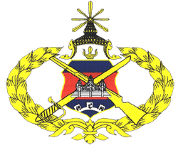
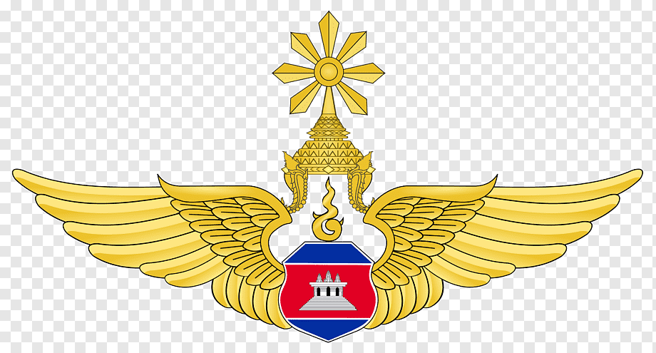
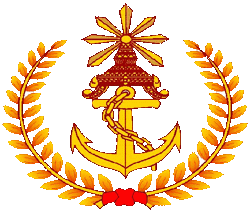

Defending the Kingdom of Cambodia
The Royal Cambodian Armed Forces (RCAF; Khmer: កងយោធពលខេមរភូមិន្ទ, is Cambodia's national military force. The Supreme Commander-in-Chief is King Norodom Sihamoni. Since 2018, General Vong Pisen has been the Commander-in-Chief of the RCAF as head of the Army, Navy, Air Force and the Gendarmerie. The armed forces operate under the jurisdiction of the Ministry of National Defence. Under the country's constitution, the RCAF is charged with protecting the sovereignty and territorial integrity of the Kingdom of Cambodia.
ARMY
AIRFORCE
NAVY
